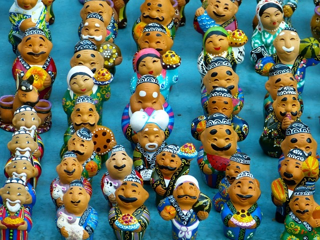

Historical Places of Uzbekistan

The name of Bibi-Khanum Mosque is very poetic as well as a legend, related with its construction. By the legend the mosque was built by the Tamerlane's favorite wife, Bibi-Khanum, in honor of his return from a trip to India.

The Registan Square is a real gem located in the very heart of the ancient city of Samarkand. It has gained its worldwide fame thanks to the great architectural ensemble that has become a monument of the oriental architecture.
Culture of Uzbekistan
The culture of Uzbekistan is vibrant and unique—it was formed over thousands of years, incorporating the traditions and customs of the peoples who at various times inhabited the territory of modern Uzbekistan.